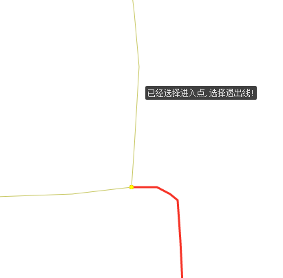
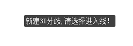
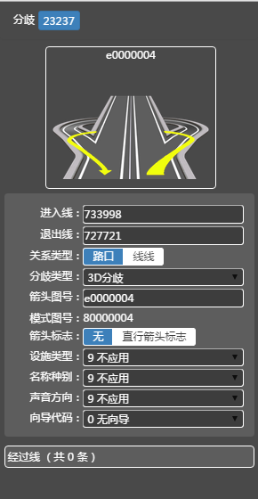
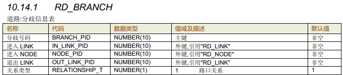
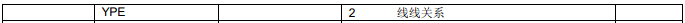
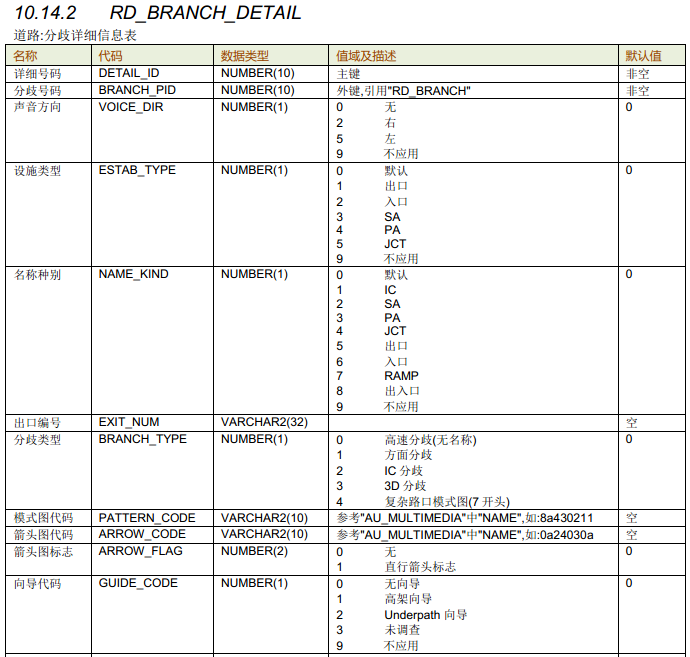

新增3D分歧
取消
取消新增

点击“新增关系”

选择“3D分歧”
地图操作引导：请选进入线！
请选退出线！
选进入Link
地图分颜色
高亮选中link
保存/空格
生成数据

点击选中退出link
地图高亮3D分歧Link
属性栏展示属性

ESC
选点
选线
选关系
选Tips
增点
增线
增关系
增点
移点
删点
打断
分离点
立交
3D分歧
高速分歧
交限
车信
限速
路口
......


操作步骤
1、点击新增关系按钮，选择“3D分歧”按钮,
2、map界面提示用户：请选择进入线！ 用户选择的第一根线作为进入线；map界面以绿色加粗高亮显示该Link，如果进入线是单方向，程序自动指定进入点；如果是双方向程序提示用户：请选择进入点！；
3、用户选择进入线的某一个端点作为“进入点”，map界面以绿色高亮显示进入线并加箭头显示进入点方向，以红色高亮显示进入点，同时系统提示用户：请选择退出线！；
4、用户选择的第二根线作为退出线（可多次选择，以当前结果为准），实时高亮选中的退出线；
5、空格键完成分歧创建；
6、界面高亮分歧进入，经过（程序自动计算），退出线；同时属性栏面板展示属性信息，并提示用户开始属性编辑；
取消动作：
1、保存前，点击其他工具按钮，结束当前操作，切换至其他动作；
2、保存前，按键盘的“Esc”，放弃分歧创建；
业务要求
1、默认开启线捕捉功能，系统根据鼠标移动捕捉最近的线；
2、程序根据进入线和退出线自动判断分歧类型，如果进入线和退出线直接挂接或挂接在同一路口上且均不为路口内道路，则分歧类型为“路口关系”，其他情况为“线线关系”；
a）如果是路口关系，在退出线上提示“节点直接挂接”；
b）如果是线线关系，在退出线上提示“线线连接”， （用于提示作业员确认，程序判断的类型是否正确）
3、创建完成后，如果是线线分歧程序自动计算经过线，以浅蓝色高亮显示经过线；
4、地图上显示3D分歧图标；
5、创建成功后，分歧号码程序自动赋值，相同进入、退出线的不同类型分歧共用一个ID；
6、进入线号码、Node号码、退出线号码程序自动赋值为用户选择的线、点；
7、属性栏展示且可编辑分歧详细信息。
8、输入箭头图信息后，属性栏上方展示模式图、箭头图图片
实时控制
1、前检查：相同的进入线，进入点，经过线，退出线，不能创建两组分歧
2、前检查：10级路不可以作为分歧的进入线，经过线，退出线参与数据编辑；
3、前检查：9级路不可以作为分歧的进入线；
4、实时控制：进入Link为单方向且通行方向不能离开路口；
5、实时控制：退出Link为单方向且通行方向不能进入路口；
6、前检查：分歧信息关系要完整，分歧信息应该是完整的线点线关系
7、前检查：相同的进入线，进入点，经过线，退出线，不能创建两组相同类型的分歧



